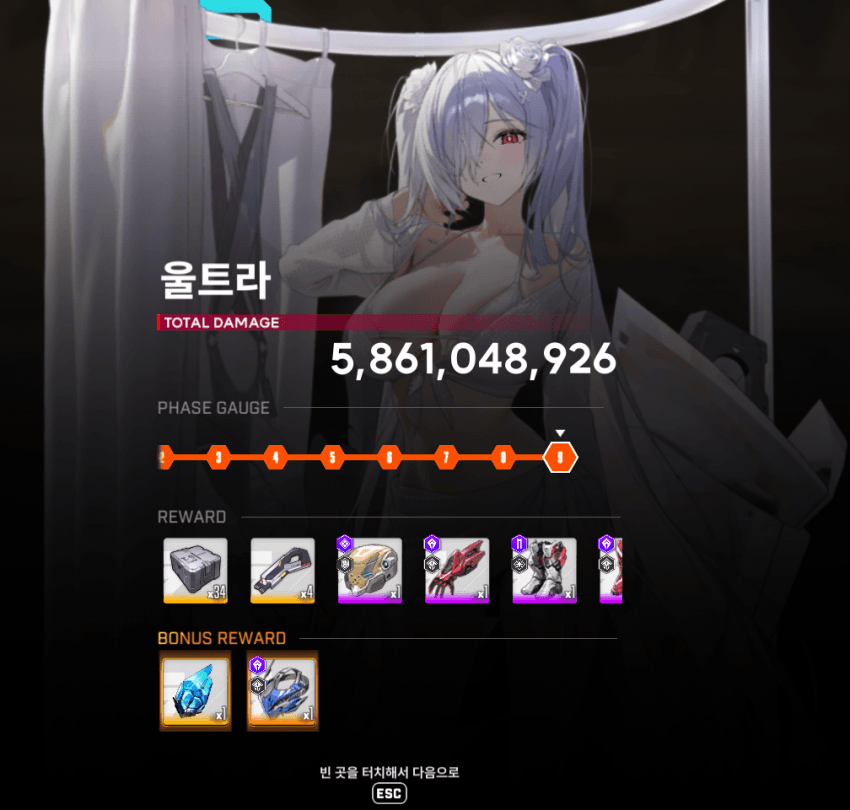
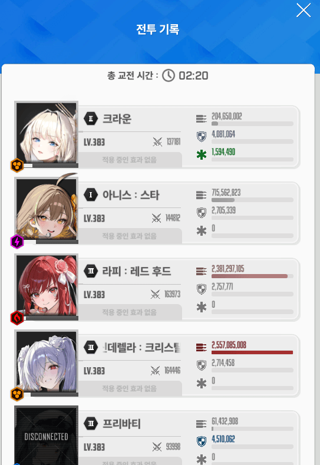

울라리 첫 9단 뚫은 기념 덱 구성 및 팁
[스쿼드 구성]
아크라선프
***특이사항***
프리바티 = 애장품 10 10 1 / 깡통 노오버
[운영법]
들어가자마자 수렐루 SR모드 바꿔주고 풀 오토
***수동 신경 써야 하는 곳***
1. 저지
2. 지진 - 독 브레스 연계 패턴 : 크라운 실드 있으면 맞으면서 딜 / 없으면 엄폐
3. 싱크 좀 낮으면 머신건 맞고 뒤질 수도 있는데 머신건 타게팅된 니케 엄폐
싱크 400도 아닌데 40초나 남음
ㄹㅇ 원핸드 슈팅 모바일게임이지 이게
프리바티 뒤지고 애들 피 갈려 있는 건
마지막에 실피 남았는데 크라운 실드 없는 상태로 독 패턴 나오는거 그냥 맞으면서 딜해서 그럼
레후야
그렇게됐다
다음 스초때 보자